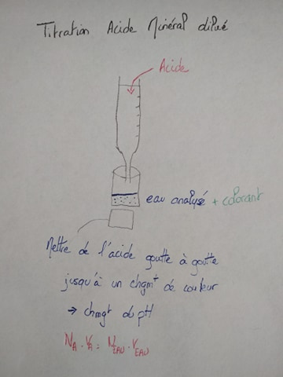
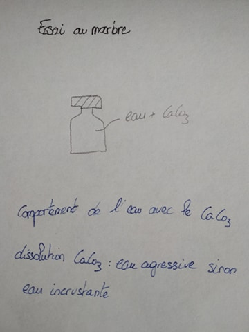

Introduction
Salinité de l'eau de mer : 35/1 000 -> 35g / L
Estuaire marin : eau salée et saumâtre
Estuaire moyen : eau salée et saumâtre
Estuaire amont : eau non salée
L'estuaire de la Seine commence lorsqu ' on ressent la marée c'est à dire ici au delà du barrage de Poses.
Système macrotidal de 8,5 m.
Il faut connaître l'amplitude et le bouchon vaseux de l'estuaire de la Seine
pH eau de rivière : 7,5
pH eau de mer : 8
Le pH va diminuer à 6 au niveau du bouchon vaseux car la colonne d'eau va perdre tout son oxygène.
Il y a aussi une forte pollution dû au bassin de Paris. Les vasières sont des puits ou des sources de nutriments.
Des facteurs anthropique vont altérer les zones naturelles.
Fonctionnement hydrodynamique
En Hiver le bouchon vaseux sera au large car il y aura beaucoup de débit, beaucoup de crue à l'aide de la pluie au niveau de l'estuaire en amont.
Débit moyen de la Seine : 400 m3/s
Débit en étiage : 139 m3/s
Débit en crue : 1 000 m3/s
Le bouchon va remonter dans l'estuaire est va engraisser les marées en période d'étiage. Si il n'y a pas beaucoup d'eau, il y aura une conséquence sur la diminution de l'oxygène.
Subtidal : zone en dessous du plateau continental.
Le marais du Hode est sur la rive droite de la Seine. Entouré de prairie et de roselières. Système naturelle avec un peu de végétation.
La turbidité va être modifié en fonction de l'emplacement. Il va y avoir des remonté d'eau dans les terres : filandres.
Gabions : mare artificielle pour la chasse.
Les usages anthropiques vont avoir des usages en eau différentes. Dans cette zone il y a des règles fixés car c'est une réserve naturelle.
Les marqueurs de la qualité physico - chimiques des eaux en surface
Il existe deux grandes classes de paramètres :
-
en relation avec la structure naturelle des eaux (fond géochimique des eaux) -> calcium, magnésium, carbonate
-
paramètres concernant les substances indésirables (pollution non toxique)
TDS = minéralisation totale
Le Titre Alcalimétrique (T.A) mesure la teneur de l'eau en alcalis libres et en carbonates alcalins caustiques.
Le Titre Alcalimétrique Complet (T.A.C) correspond à la teneur de l'eau en alcalis libres, carbonates et bicarbonates.

TAC = dureté carbonaté et TH = dureté total (Calcium + Magnésium).
Cela donne la carte d'identité des eaux.
pH 7-9 : zones naturelles -> hCOL3 -
Le cycle du carbone

Eau calcaire : eau incrustante